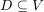
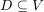
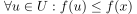
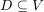

lokales Maximum
1. Definition
Sei  ein K-Vektorraum mit einer Topologie und einer Abbildung
ein K-Vektorraum mit einer Topologie und einer Abbildung  für eine Teilmenge 
Dann ist
für eine Teilmenge 
Dann ist  ein lokales Maximum für
ein lokales Maximum für  , falls eine Umgebung
, falls eine Umgebung  existiert, so dass gilt:
existiert, so dass gilt:

1
Sei ein K-Vektorraum mit einer Topologie und einer Abbildung für eine Teilmenge 
Dann ist ein lokales Maximum für , falls eine Umgebung existiert, so dass gilt: